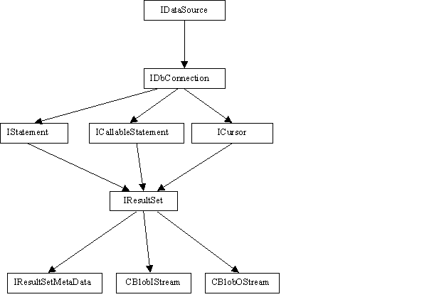

For most purposes it is sufficient to include one file in the user source file: dbapi.hpp.
#include <dbapi/dbapi.hpp> or,
#include <dbapi/driver/drivers.hpp> (for static linkage only!)
All objects are returned by pointers to their respective interfaces. The null (0) value is valid, meaning that no object was returned.
In general, any child object is valid only in the scope of its parent object. This is because most of the objects share the same internal structures. There is no need to delete every object explicitly, as all created objects will be deleted upon program exit.
There are several drivers for working with different SQL servers on different platforms. The ones presently implemented are "ctlib" (Sybase), "dblib"(MS SQL), "ftds" (cross platform). For static linkage these drivers should be registered manually; for dynamic linkage this is not necessary. The CDriverManager object maintains all registered drivers.
CDriverManager &dm = CDriverManager::GetInstance(); DBAPI_RegisterDriver_CTLIB(dm); DBAPI_RegisterDriver_DBLIB(dm);
The IDataSource interface defines the database platform. To create an object implementing this interface, use the method CreateDs(const string& driver). An IDataSource can create objects represented by an IConnection interface, which is responsible for the connection to the database. It is highly recommended to specify the database name as an argument to the CreateConnction() method, or use the SetDatabase() method of a CConneciton object instead of using a reqular SQL statement. In the later case, the library won't be able to track the current database.
IDataSource *ds = dm.CreateDs("ctlib");
IConnection *conn = ds->CreateConnection();
conn->Connect("user", "password", "server", "database");
IStatement *stmt = conn->CreateStatement();
Every additional call to IConnection::CreateStatement() results in cloning the connection for each statement. These connections inherit the same default database, which was specified in the Connect() or SetDatabase() method. Thus if the default database was changed by calling SetDatabase(), all subsequent cloned connections created by CreateStatement() will inherit this particular default database.
The library simulates the main result-retrieving loop of the Sybase client library by using the IStatement::HasMoreResults() method:
stmt->Execute("select …");
while( stmt->HasMoreResults() ) {
if( stmt->HasRows() ) {
IResultSet *rs = stmt->GetResultset();
// Retrieve results, if any
while( rs->Next() ) {
int col1 = rs->GetVariant(1).GetInt4();
...
}
}
}
This method should be called until it returns false, which means that no more results is available. It returns as soon as a result is ready. The type of the result can be obtained by calling the IResultSet::GetResultType() method. Supported result types are eRowResult, eParamResult, eComputeResult, eStatusResult, eCursorResult. The method IStatement::GetRowCount() returns the number of updated or deleted rows.
The IStatement::ExecuteUpdate() method is used for SQL statements that do not return rows:
stmt->ExecuteUpdate("update...");
int rows = stmt->GetRowCount();
The method IStatement::GetResultSet() returns an IResultSet object. The method IResultSet::Next() actually does fetch, so it should be always called first. It returns false when no more fetch data is available. All column data, except Image and Text is represented by a single CVariant object. The method IResultSet::GetVariant() takes one parameter – column number. Column numbers start with 1.
The method ICallableStatement::SetParam(const CVariant& v, const string& name) is used to pass parameters to stored procedures and dynamic SQL statements. To ensure the correct parameter type it is recommended to use CVariant type factories (static methods) to create a CVariant of the required internal type. Here are a few examples: CVariant::Int4(Int4 *p), CVariant::TinyInt(UInt1 *p), CVariant::VarChar(const char *p, size_t len ) etc.
There are also corresponding constructors, like CVariant::CVariant(Int4 v), CVariant::CVariant(const string& s), ..., but the user must ensure the proper type conversion in the arguments, and not all internal types can be created using constructors.
Output parameters are set by the ICallableStatement::SetOutputParam(const CVariant& v, const string& name) method, where the first argument is a null CVariant of a particular type, e.g. SetOutputParam(CVariant::SmallInt(0),"@arg").The ICallableStatement object is used for calling stored procedures. Fist get the object itself by calling IConnection::PrepareCall(). Then set any parameters. If the parameter name is empty, the calls to SetParam() should be in the exact order of the actual parameters. Retrieve all results in the main loop. Get the status of the stored procedure using the ICallableStatement::GetReturnStatus() method.
ICallableStatement *cstmt = conn->PrepareCall("ProcName");
Uint1 status = 1;
cstmt->SetParam(CVariant("test"), "@test_input");
cstmt->SetParam(CVariant::TinyInt(&status), "@status");
cstmt->SetOutputParam(CVariant::Int(0), "@result");
cstmt->Execute();
while(cstmt->HasMoreResults()) {
if( cstmt->HasRows() ) {
IResultSet *rs = cstmt->GetResultSet();
switch( rs->GetResultType() ) {
case eRowResult:
while(rs->Next()) {
// retrieve row results
}
break;
case eParamResult:
while(rs->Next()) {
// Retrieve parameter row
}
break;
}
}
}
// Get status
int status = cstmt->GetReturnStatus();
The library currently supports basic cursor features such as setting parameters and cursor update and delete operations.
ICursor *cur = conn->CreateCursor("table_cur",
"select ... for update of ...");
IResultSet *rs = cur->Open();
while(rs->Next()) {
cur->Update(table, sql_statement_for_update);
}
cur->Close();
The following libraries should be used (the order is significant):
dbapi dbapi_driver_ctlib dbapi_driver
plus corresponding Sybase libraries.
dbapi dbapi_driver_dblib dbapi_driver
plus Sybase sybdb
| Michael Kholodov | $Date$ |